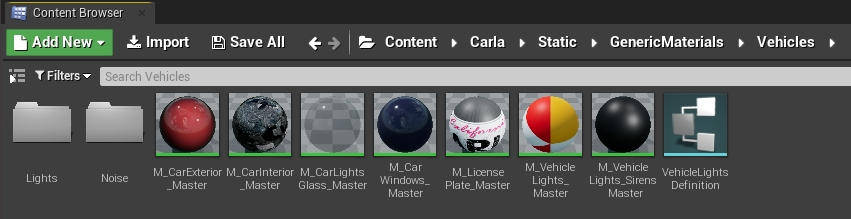
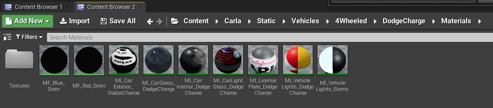
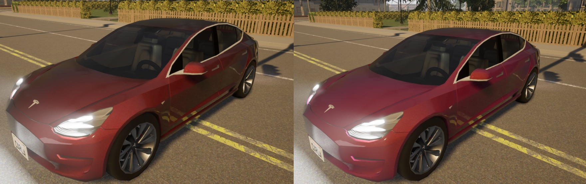
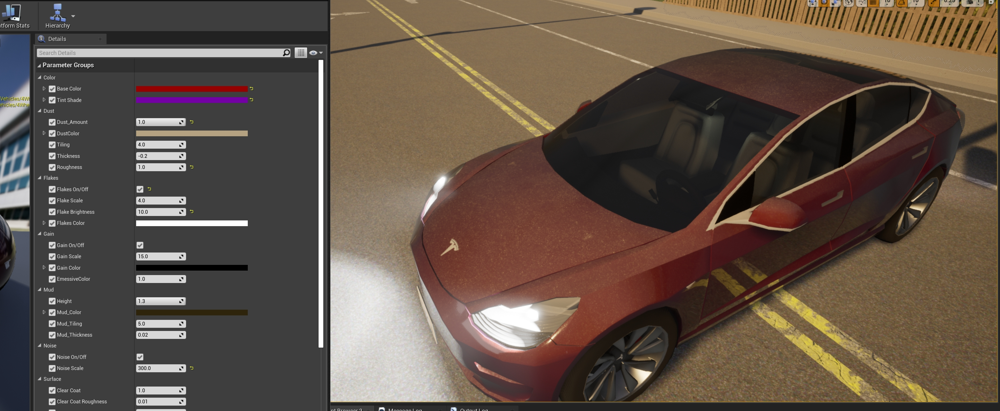
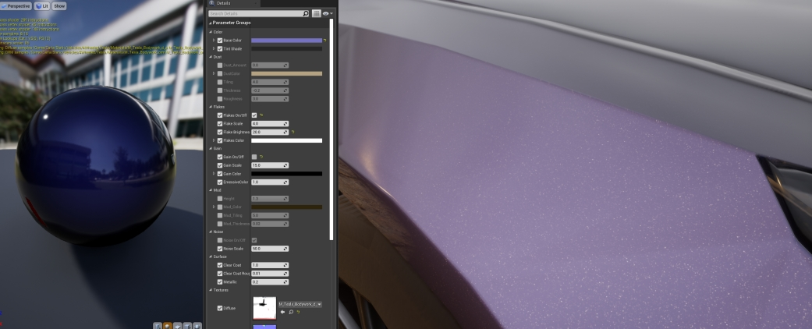
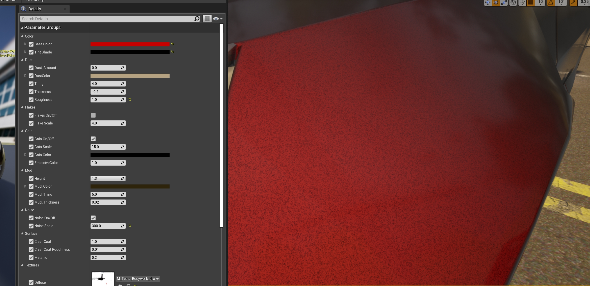
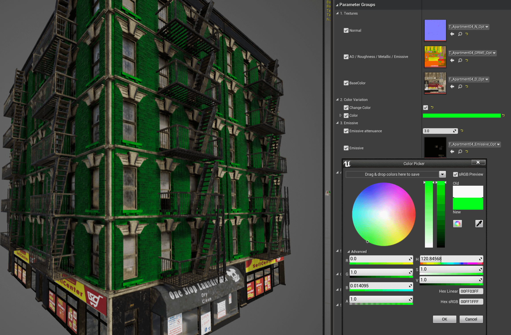
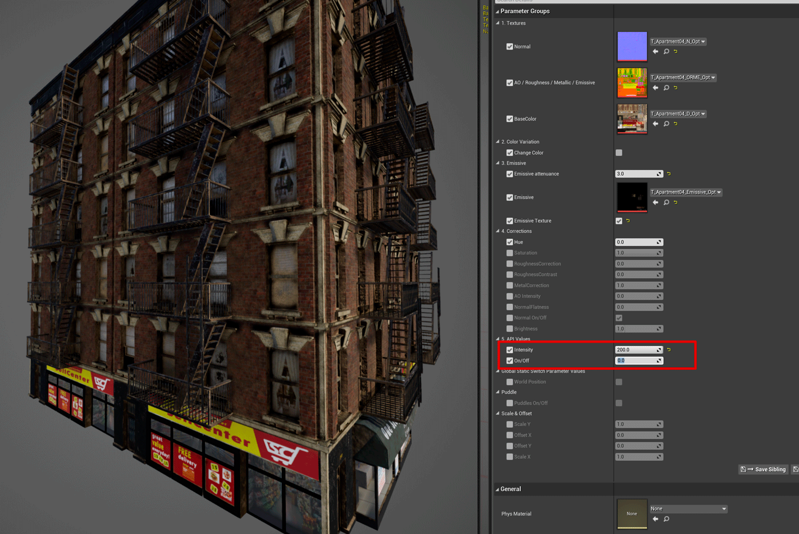

材质定制¶
Carla 团队准备每个资产在某些默认设置下运行。但是，从源代码构建的用户可以修改这些内容以最适合他们的需求。
!!! 重要 本教程仅适用于使用源代码构建并有权访问虚幻编辑器的用户。
汽车材质 ¶
在 Carla 中，有一组主材料用作车辆不同部件的模板。为每个车辆模型创建一个实例，然后更改为所需的结果。主要材质可以在 Content/Carla/Static/GenericMaterials/Vehicles （位于源代码的Unreal/CarlaUE4目录中）中找到，如下所示。

- M_CarExterior_Master — 应用于车身的材质。
- M_CarInterior_Master — 应用于汽车内部的材质。
- M_CarLightsGlass_Master — 应用于覆盖车灯的玻璃的材质。
- M_CarWindows_Master — 应用于窗户的材质。
- M_CarLicensePlate_Master — 应用于车牌的材质。
- M_VehicleLights_Master — 作为发射纹理应用于汽车灯的材质。
- M_VehicleLights_Sirens_Master — 应用于警报器的材质（如果适用）。
定制汽车材质 ¶
创建主材料的实例并将它们存储在新模型的相应文件夹中。以下是蓝图库中为警车创建的实例，vehicle.dodge_charger.police。

材料的通用文档以及如何使用它们可以在 虚幻引擎文档 中找到。所有材料都可以进行很大程度的修改，但只有外观材料的性能值得一提。其他材料具有某些可以更改的属性，例如玻璃材料的不透明度和颜色，但不建议这样做，除非有特定用途。
外观特性 ¶
外观材料应用于车身，是最可定制的一种（双击M_CarExterior_Master，进入参数默认值选项卡）。
- Base color — 车身的基色。
- Tint shade — 色调的可见度根据可视角度而变化。

- Global Dust — 涂在汽车上的污垢纹理。灰尘会堆积在几何体的顶部，而在底部几乎不会被注意到。如果旋转几何体，灰尘将出现在车辆顶部的部件上。
Dust_Amount— 纹理的不透明度。DustColor— 灰尘纹理的基色。Tiling— 灰尘纹理图案的大小和重复。Thickness— 灰尘的密度。Roughness— 由于灰尘而减少汽车的金属反射。

- Global Flakes — 汽车金属漆上闪闪发光的薄片。
Flakes On/Off— 启用或禁用该功能。Flake Scale— 薄片的大小。Flake Brightness— 闪光的强度。Flakes Color— 粒子的基色。

- Global Gain — 汽车底漆的噪音。
- Gain On/Off — 启用或禁用该功能。
- Scale — 增益的大小。
- Color — 增益的基色。

- Global Mud — 涂在汽车上的泥浆纹理。泥浆从车的底部到顶部出现。
Height— 汽车出现泥浆的部分。Mud_Color— 泥浆纹理的底色。Mud_Tiling— 泥浆纹理图案的大小和重复。Mud_Thickness— 泥浆的密度。

- Global Noise — 应用于材质法线的噪声。打造橙皮效果。
Noise On/Off— 启用或禁用该功能。Noise Scale— 通过更改法线贴图创建的凹凸大小。

- Global Surface — 涂在车辆油漆上的光泽和透明涂层。这是 汽车喷漆 的最后一步。
Clear Coat— 涂层的不透明度。Clear Coat Roughness— 所得材质的粗糙度（光泽度）。Metallic— 所得材质的反射。

建筑材质 ¶
应用于建筑物的材质由四种基本纹理组成，这些纹理组合在一起确定材质的基本属性（例如打开Content/Carla/Static/Building/SM_Apartment01_1）。
- Diffuse — 包含材质的基本绘画。
RGB— 带有基色的通道。Alpha— 此通道定义一个掩膜，允许修改白色部分的颜色。这对于从相同材料创建一些变体非常有用。

-
ORME — 使用特定通道映射材质的不同属性。
Ambient occlusion— 包含在R通道中。Roughness— 包含在G通道中。Metallic map— 包含在B通道中。Emissive mask— 包含在Alpha通道中。该掩模允许改变白色部分的发射颜色和强度。
-
Normal — 包含材质的法线贴图。
RGB— 法线贴图信息。
-
Emissive — 如果适用，此纹理用于设置纹理的自发光基色。
RGB— 纹理中发射元素的颜色信息。

定制建筑材料 ¶
与汽车材料类似，如果需要，建筑材料可以进行很大的改变，但仅当用户具有虚幻引擎方面的一些专业知识时才建议这样做。但是，建筑物使用的两个主要着色器可以进行一些自定义（例如在虚幻编辑器的内容浏览器中打开Content/Carla/Static/GenericMaterials/00_MasterOpt/M_GlassMaster）。

-
玻璃着色器 —
M_GlassMaster.Opacity— 在白色区域漫反射 DiffuseAlpha纹理上启用颜色改变。Color— 基于白色区域漫反射 DiffuseAlpha纹理应用色调。
-
建筑着色器 —
M_MaterialMasterGlobal 2. Color Variation/Change Color— 在白色区域漫反射( Diffuse ) 的Alpha纹理上启用颜色改变。Global 2. Color Variation/Color— 基于白色区域漫反射 DiffuseAlpha纹理应用色调。Global 3. Emissive/Emissive Texture— 启用 自发光(Emissive) 纹理的使用。Global 3. Emissive/EmissiveColor— 基于 ORMEEmissive mask的白色区域应用色调。Global 3. Emissive/Emissive attenuance— BP_Lights 中除以强度因子以获得适当的发射值。Global 4. Corrections/RoughnessCorrection— 更改粗糙度贴图的强度。Global 4. Corrections/MetallicCorrection— 更改金属贴图的强度。NormalFlatness— 更改法线贴图的强度。
这是用户定制车辆和建筑物材料的最显着方式的总结。
任何可能出现的疑问都非常欢迎在论坛中提出。